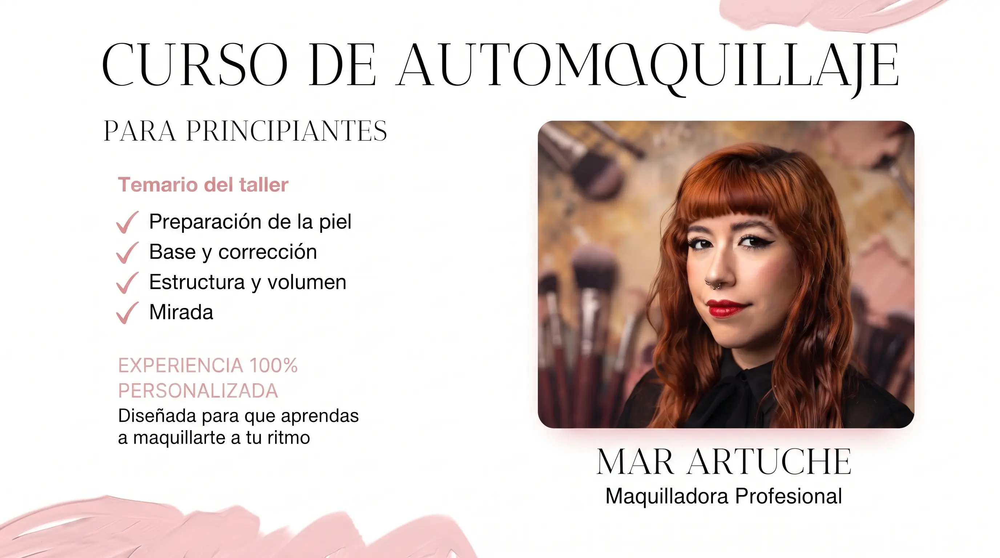

WORKSHOPEn este taller vas a aprender:
No hace falta tener conocimientos previos, y quienes asistan pueden traer sus productos para aprender a sacarles el mayor provecho posible. Si te falta algo, acá vas a tener todos los productos y herramientas a disposición para utilizar durante la clase.
$50.000
Las consultas e inscripciones las gestiona directamente Mar.
Consultar por WhatsApp